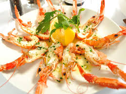

Ways to Eat It: The same ways that you would eat a few very, very expensive shrimp.
Pros: Pale orange, narrow, and delicate, the langoustine is like a sexy little lobster.
Cons: The Latin name of this animal is Nephrops norvegicus, which means Norwegian kidney eye. Also, a May 2015 article in Bon Appetit magazine named langoustines "the new foie gras."
